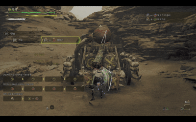

랜스는 방어 능력이 가장 뛰어난 무기 중 하나로,
거의 모든 공격을 방패로 막아낼 수 있는 철벽 스타일의 무기입니다.
긴 리치를 활용한 찌르기 공격과 뛰어난 안정성이 조화를 이루며,
‘움직이는 성벽’이라 불릴 만큼 탄탄한 전투를 보여줍니다.
단순하지만 집중력과 인내가 필요한 무기로,
적의 움직임을 예측해 반격 타이밍을 잡는 것이 중요합니다.

랜스
특성 요약
| 무기 | 상쇄 | 가드 | 전용자원 | 난이도 |
|---|---|---|---|---|
| 랜스 | ❌ | ✅ | ❌ | 1 |
| 버튼 역할 | 조작 | 설명 |
|---|---|---|
| 중단찌르기 I | Y |
정면을 찌르는 기본 연계 공격입니다. 집중 모드 중에는 LS + Y로 입력한 방향으로 이동하며 찌르실 수 있습니다. 3번까지 연계되며, 중단찌르기 III 후 Y를 누르시면 3단 찌르기로 파생됩니다. |
| 상단찌르기 I | B |
위쪽을 찌르는 기본 연계 공격입니다. 집중 모드 중에는 카메라 정면 방향을 향해 찌릅니다. 3번까지 연격이 가능하며, 상단찌르기 III 후 B를 누르는 시간에 따라 위력이 상승하는 모으기 카운터로 파생됩니다. 몬스터 공격에 맞춰 사용하면 강력한 카운터 2연 찌르기로 파생됩니다. |
| 뛰어들어찌르기 | Y + B | 정면으로 내디디며 찌르는 공격입니다. |
| 후려치기 | 콤보 중 Y + B | 콤보 중 파생할 수 있는 크게 후려치는 공격입니다. |
| 가드 | RT 길게 누르기 |
방패를 들어 방어하는 동작입니다. 연계 중에도 가드가 가능하며, 공격을 받았을 때 빈틈이 적으면 자동으로 반격이 나갑니다. 저스트 가드 성공 시 높은 위력으로 반격합니다. 가드 중 LS + Y로 방패를 들고 크게 내디딜 수 있습니다. Y를 다시 누르면 방패공격, B를 누르면 뛰어들어찌르기로 파생됩니다. |
| 가드 대시 | RT 길게 누르기 + LS + Y |
방패를 들고 앞으로 크게 내디디는 동작입니다. 이후 Y로 방패공격, B로 뛰어들어찌르기로 각각 파생됩니다. |
| 모으기 카운터 | RT 길게 누르기 + B |
공격을 받아 자동으로 반격하는 가드입니다. RT 또는 B를 길게 누르면 모으기가 가능하며, 버튼을 놓으면 발동하는 찌르기를 몬스터의 공격에 맞춰 사용하면 강력한 카운터 2연 찌르기로 파생됩니다. 모으기 중 RT + (특수키)로 그 자리에 앉아서 발동하는 철벽 방어(파워가드)로 파생 가능합니다. 스태미나를 서서히 소모하지만, 가드 리액션을 크게 줄일 수 있습니다. 가드 횟수와 받은 공격의 위력에 따라 직후 반격의 위력이 상승합니다. |
| 돌진 | RT 길게 누르기 + Y + B |
창을 들고 돌진하는 공격입니다. 달릴 때 연속 공격이 가능하지만, 스태미나가 서서히 소모됩니다. 계속 달리면 속도와 위력이 증가합니다. 돌진 중 LS + (특수키)로 방향 스텝·턴이 가능하며, Y 또는 B로 속도를 살린 찌르기 공격으로 파생됩니다. 속도가 빠르면 더욱 강력한 피니시 2단 찌르기로 파생됩니다. |
| 되돌려 찌르기 | 가드 성공 후 Y |
가드 후 빠르게 반격하는 공격입니다. 기본 연계로 파생하기 쉽고, 공격 후에 가드로 이어지기도 좋습니다. |
| 큰 되돌려 찌르기 | 가드 성공 후 B |
가드 후 내디뎌서 반격하는 공격입니다. 일반 반격보다 위력이 높지만, 빈틈이 더 큽니다. |
| 집중 밀어올려 찌르기 | LT 길게 누르기 + RB |
상처에 효과적인 방패 공격입니다. 상처나 약점에 맞으면 내디뎌 찔러 여러 번 대미지를 줄 수 있습니다. 찌르기 공격 중 RB로 임의 타이밍에 피니시할 수 있습니다. |
상단/중단 찌르기
Y/B
Y/B
Y/B
기본적인 평타
기본적인 평타 사이클

모으기 카운터
RT
+
B
카운터 공격
공격 타이밍에 맞춰 버튼을 누르면 '카운터 2연 찌르기'로 전환되며,
이는 가드 성능과 관계없이 무적 판정으로 대부분의 공격을 받아치는 강력한 찌르기입니다.
